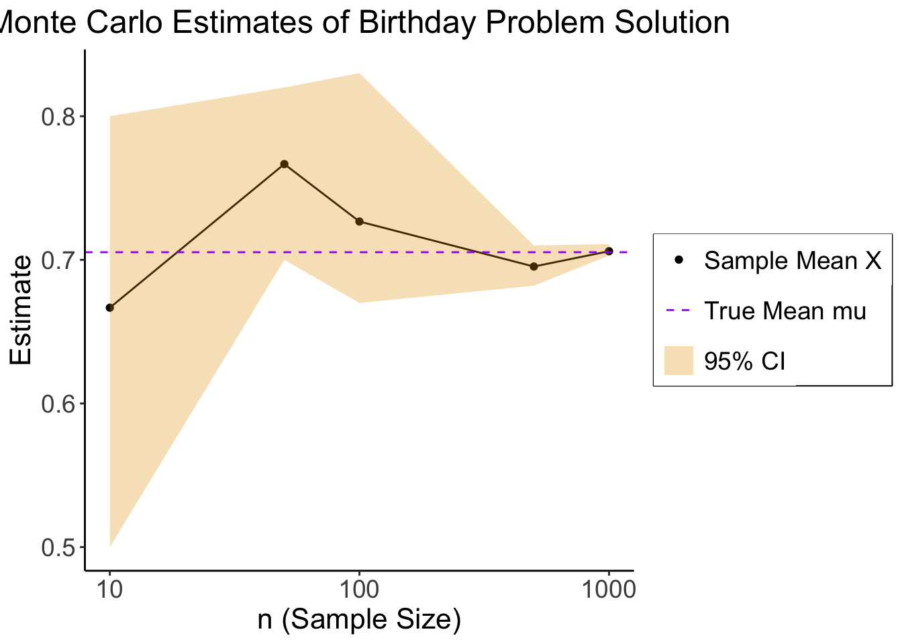

source("../_globals.r")Week 3: Conditional Probability
DSAN 5100: Probabilistic Modeling and Statistical Computing
Section 03
Class Sessions
Schedule
| Start | End | Topic | Recording | |
|---|---|---|---|---|
| Lecture | 12:30pm | 12:40pm | Recap → | |
| 12:40pm | 1:20pm | What is Conditional Probability? → | ||
| 1:20pm | 2:00pm | Bayes’ Theorem and its Implications → | ||
| Break! | 2:00pm | 2:10pm | ||
| Lab | 2:10pm | 2:50pm | Lab 2 Demonstrations | |
| 2:50pm | 3:00pm | Lab 2 Assignment Overview |
Recap
Recap
- Logic \(\rightarrow\) Set Theory \(\rightarrow\) Probability Theory
- Entirety of probability theory can be derived from two axioms:
- But what does “mutually exclusive” mean…?
Venn Diagrams: Sets
\[ \begin{align*} &A = \{0, 1, 2\}, \; B = \{4, 5, 6\} \\ &\implies A \cap B = \varnothing \end{align*} \]
\[ \begin{align*} &A = \{1, 2, 3\}, \; B = \{3, 4, 5\} \\ &\implies A \cap B = \{3\} \end{align*} \]
Venn Diagrams: Events (Dice)
\[ \begin{align*} A &= \{\text{Roll is even}\} = \{2, 4, 6\} \\ B &= \{\text{Roll is odd}\} = \{1, 3, 5\} \\ C &= \{\text{Roll is in Fibonnaci sequence}\} = \{1, 2, 3, 5\} \end{align*} \]
| Set 1 | Set 2 | Intersection | Mutually Exclusive? | Can Happen Simultaneously? |
|---|---|---|---|---|
| \(A\) | \(B\) | \(A \cap B = \varnothing\) | Yes | No |
| \(A\) | \(C\) | \(A \cap C = \{2\}\) | No | Yes |
| \(B\) | \(C\) | \(B \cap C = \{1, 3, 5\}\) | No | Yes |
“Rules” of Probability
- (Remember: not “rules” but “facts resulting from the logic \(\leftrightarrow\) probability connection”)
What is Conditional Probability?
Conditional Probability
- Usually if someone asks you probabilistic questions, like
- “What is the likelihood that [our team] wins?”
- “Do you think it will rain tomorrow?” and so on
- You don’t guess a random number, you consider and incorporate evidence.
- Example: \(\Pr(\text{rain})\) on its own, without any other info? A tough question… maybe \(0.5\)?
- In reality, we would think about
- \(\Pr(\text{rain} \mid \text{month of the year})\)
- \(\Pr(\text{rain} \mid \text{where we live})\)
- \(\Pr(\text{rain} \mid \text{did it rain yesterday?})\)
- Psychologically, breaks down into two steps: (1) Think of a baseline probability, (2) Update baseline probability to incorporate relevant evidence (more on this in a bit…)
- Also recall from last week: all probability is conditional probability, even if just conditioned on “something happened” (\(\Omega\), the thing defined so \(\Pr(\Omega) = 1\))
Naïve Definition 2.0
| World Name | Weather in World | Likelihood of Rain Today |
|---|---|---|
| \(R\) | Rained for the past 5 days | \(\Pr(\text{rain} \mid R) > 0.5\) |
| \(M\) | Mix of rain and non-rain over past 5 days | \(\Pr(\text{rain} \mid M) \approx 0.5\) |
| \(S\) | Sunny for the past 5 days | \(\Pr(\text{rain} \mid S) < 0.5\) |
Law of Total Probability
- Suppose the events \(B_1, \ldots, B_k\) form a partition of the space \(S\) and \(\Pr(B_j) > 0 \forall j\).
- Then, for every event \(A\) in \(S\),
\[ \Pr(A) = \sum_{i=1}^k \Pr(B_j)\Pr(A \mid B_j) \]
- Probability of an event is the sum of its conditional probabilities across all conditions.
- In other words: \(A\) is some event, \(B_1, \ldots, B_n\) are mutually exclusive events filling entire sample-space, then
\[ \Pr(A) = \Pr(A \mid B_1)\Pr(B_1) + \Pr(A \mid B_2)\Pr(B_2) + \cdots + \Pr(A \mid B_n)\Pr(B_n) \]
i.e. Compute the probability by summing over all possible cases.
Example
- Probabilities of completing a job on time, with and without rain, are 0.42 and 0.90 respectively.
- Probability it will rain is 0.45. What is the probability the job will be completed on time?
- \(A\) = job will be completed on time, \(B\) = rain
\[ \Pr(B) = 0.45 \implies \Pr(B^c) = 1 - \Pr(B) = 0.55. \]
- Note: Events \(B\) and \(B^c\) are exclusive and form partitions of the sample space \(S\)
- We know \(\Pr(A \mid B) = 0.24\), \(\Pr(A \mid B^c) = 0.9\).
- By the Law of Total Probability, we have
\[ \begin{align*} \Pr(A) &= \Pr(B)\Pr(A \mid B) + \Pr(B^c)\Pr(A \mid B^c) \\ &= 0.45(0.42) + 0.55(0.9) = 0.189 + 0.495 = 0684. \end{align*} \]
So, the probability that the job will be completed on time is 0.684. (source)
Bayes’ Theorem and its Implications
Deriving Bayes’ Theorem
- Literally just a re-writing of the conditional probability definition (don’t be scared)!
- For two events \(A\) and \(B\), definition of conditional probability says that
\[ \begin{align*} \Pr(A \mid B) &= \frac{\Pr(A \cap B)}{\Pr(B)} \tag{1} \\ \Pr(B \mid A) &= \frac{\Pr(B \cap A)}{\Pr(A)} \tag{2} \end{align*} \]
- Multiply to get rid of fractions
\[ \begin{align*} \Pr(A \mid B)\Pr(B) &= \Pr(A \cap B) \tag{1*} \\ \Pr(B \mid A)\Pr(A) &= \Pr(B \cap A) \tag{2*} \end{align*} \]
- But set intersection is associative (just like multiplication…), \(A \cap B = B \cap A\)! So, we know LHS of \((\text{1*})\) = LHS of \((\text{2*})\):
\[ \Pr(A \mid B)\Pr(B) = \Pr(B \mid A)\Pr(A) \]
- Divide both sides by \(\Pr(B)\) to get a new definition of \(\Pr(A \mid B)\), Bayes’ Theorem!
\[ \boxed{\Pr(A \mid B) = \frac{\Pr(B \mid A)\Pr(A)}{\Pr(B)}} \]
Why Is This Helpful?
- In words (as exciting as I can make it, for now): Bayes’ Theorem allows us to take information about \(B \mid A\) and use it to infer information about \(A \mid B\)
- It isn’t until you work through some examples that this becomes mind-blowing, the most powerful equation we have for inferring unknowns from knowns…
- Consider \(A = \{\text{person has disease}\}\), \(B = \{\text{person tests positive for disease}\}\)
- Is \(A\) observable on its own? No, but…
- Is \(B\) observable on its own? Yes, and
- Can we infer information about \(A\) from knowing \(B\)? Also Yes, thanks to Bayes!
- Therefore, we can use \(B\) to infer information about \(A\), i.e., calculate \(\Pr(A \mid B)\)…
Why Is This Helpful for Data Science?
- It merges probability theory and hypothesis testing into a single framework:
\[ P(\text{hypothesis} \mid \text{data}) = \frac{P(\text{data} \mid \text{hypothesis})}{P(\text{data})} \]
Probability Forwards and Backwards
Two discrete RVs:
- Weather on a given day, \(W \in \{\textsf{Rain},\textsf{Sun}\}\)
- Action that day, \(A \in \{\textsf{Go}, \textsf{Stay}\}\): go to party or stay in and watch movie
Data-generating process: if \(\textsf{Sun}\), rolls a die \(R\) and goes out unless \(R = 6\). If \(\textsf{Rain}\), flips a coin and goes out if \(\textsf{H}\).
Probabilistic Graphical Model (PGM):

So, if we know \(W = \textsf{Sun}\), what is \(P(A = \textsf{Go})\)? \[ \begin{align*} P(A = \textsf{Go} \mid W) &= 1 - P(R = 6) \\ &= 1 - \frac{1}{6} = \frac{5}{6} \end{align*} \]
Conditional probability lets us go forwards (left to right):

But what if we want to perform inference going backwards?
- If we see Ana at the party, we know \(A = \textsf{Go}\)
- What does this tell us about the weather?
- Intuitively, we should increase our degree of belief that \(W = \textsf{Sun}\). But, by how much?
- We don’t know \(P(W \mid A)\), only \(P(A \mid W)\)…

\[ P(W = \textsf{Sun} \mid A = \textsf{Go}) = \frac{\overbrace{P(A = \textsf{Go} \mid W = \textsf{Sun})}^{5/6~ ✅}\overbrace{P(W = \textsf{Sun})}^{❓}}{\underbrace{P(A = \textsf{Go})}_{❓}} \]
- We’ve seen \(P(W = \textsf{Sun})\) before, it’s our prior: the probability without having any additional relevant knowledge. So, let’s say 50/50. \(P(W = \textsf{Sun}) = \frac{1}{2}\)
- If we lived in Seattle, we could pick \(P(W = \textsf{Sun}) = \frac{1}{4}\)
\[ P(W = \textsf{Sun} \mid A = \textsf{Go}) = \frac{\overbrace{P(A = \textsf{Go} \mid W = \textsf{Sunny})}^{5/6~ ✅}\overbrace{P(W = \textsf{Sun})}^{1/2~ ✅}}{\underbrace{P(A = \textsf{Go})}_{❓}} \]
- \(P(A = \textsf{Go})\) is trickier: the probability that Ana goes out regardless of what the weather is. But there are only two possible weather outcomes! So we just compute
\[ \begin{align*} &P(A = \textsf{Go}) = \sum_{\omega \in S(W)}P(A = \textsf{Go}, \omega) = \sum_{\omega \in S(W)}P(A = \textsf{Go} \mid \omega)P(\omega) \\ &= P(A = \textsf{Go} \mid W = \textsf{Rain})P(W = \textsf{Rain}) + P(A = \textsf{Go} \mid W = \textsf{Sun})P(W = \textsf{Sun}) \\ &= \left( \frac{1}{2} \right)\left( \frac{1}{2} \right) + \left( \frac{5}{6} \right)\left( \frac{1}{2} \right) = \frac{1}{4} + \frac{5}{12} = \frac{2}{3} \end{align*} \]
Putting it All Together
\[ \begin{align*} P(W = \textsf{Sun} \mid A = \textsf{Go}) &= \frac{\overbrace{P(A = \textsf{Go} \mid W = \textsf{Sunny})}^{3/4~ ✅}\overbrace{P(W = \textsf{Sun})}^{1/2~ ✅}}{\underbrace{P(A = \textsf{Go})}_{1/2~ ✅}} \\ &= \frac{\left(\frac{3}{4}\right)\left(\frac{1}{2}\right)}{\frac{1}{2}} = \frac{\frac{3}{8}}{\frac{1}{2}} = \frac{3}{4}. \end{align*} \]
- Given that we see Ana at the party, we should update our beliefs, so that \(P(W = \textsf{Sun}) = \frac{3}{4}, P(W = \textsf{Rain}) = \frac{1}{4}\).
A Scarier Example
- Bo worries he has a rare disease. He takes a test with 99% accuracy and tests positive. What’s the probability Bo has the disease? (Intuition: 99%? …Let’s do the math!)
- \(H \in \{\textsf{sick}, \textsf{healthy}\}, T \in \{\textsf{T}^+, \textsf{T}^-\}\)
- The test: 99% accurate. \(P(T = \textsf{T}^+ \mid H = \textsf{sick}) = 0.99\), \(P(T = \textsf{T}^- \mid H = \textsf{healthy}) = 0.99\).
- The disease: 1 in 10K. \(P(H = \textsf{sick}) = \frac{1}{10000}\)
- What do we want to know? \(P(H = \textsf{sick} \mid T = \textsf{T}^+)\)
- How do we get there?

\(H\) for health, \(T\) for test result
Photo credit: https://thedatascientist.com/wp-content/uploads/2019/04/reverend-thomas-bayes.jpg
\[ \begin{align*} P(H = \textsf{sick} \mid T = \textsf{T}^+) &= \frac{P(T = \textsf{T}^+ \mid H = \textsf{sick})P(H = \textsf{sick})}{P(T = \textsf{T}^+)} \\ &= \frac{(0.99)\left(\frac{1}{10000}\right)}{(0.99)\left( \frac{1}{10000} \right) + (0.01)\left( \frac{9999}{10000} \right)} \end{align*} \]
p_sick <- 1 / 10000
p_healthy <- 1 - p_sick
p_pos_given_sick <- 0.99
p_neg_given_sick <- 1 - p_pos_given_sick
p_neg_given_healthy <- 0.99
p_pos_given_healthy <- 1 - p_neg_given_healthy
numer <- p_pos_given_sick * p_sick
denom1 <- numer
denom2 <- p_pos_given_healthy * p_healthy
final_prob <- numer / (denom1 + denom2)
final_prob[1] 0.009803922- … Less than 1% 😱
Proof in the Pudding
library(tibble)
library(dplyr)
Attaching package: 'dplyr'The following objects are masked from 'package:stats':
filter, lagThe following objects are masked from 'package:base':
intersect, setdiff, setequal, union# Disease rarity
p_disease <- 1 / 10000
# 1K people
num_people <- 1000
# Give them ids
ppl_df <- tibble(id=seq(1,num_people))
# Whether they have the disease or not
has_disease <- rbinom(num_people, 2, p_disease)
ppl_df <- ppl_df %>% mutate(has_disease=has_disease)
disp(ppl_df %>% head(3))Code
sum(ppl_df$has_disease) / num_people[1] 0.001(Foreshadowing Monte Carlo methods)
library(dplyr)
take_test <- function(is_sick) {
if (is_sick) {
return(rbinom(1,2,p_neg_given_sick))
} else {
return(rbinom(1,2,p_pos_given_healthy))
}
}
ppl_df['test_result'] <- unlist(lapply(ppl_df$has_disease, take_test))
#ppl_df %>% head(5)
num_positive <- sum(ppl_df$test_result)
p_positive <- num_positive / num_people
writeLines(paste0(num_positive," positive tests / ",num_people," total = ",p_positive))14 positive tests / 1000 total = 0.014- Bo is one of those 14 people!
pos_ppl <- ppl_df %>% filter(test_result == 1)
disp(pos_ppl, obs_per_page = 10)- Bo doesn’t have it, and neither does anyone else who tested positive!
- But, in the real world, we only observe \(T\)

Bayes: Takeaway
- Bayesian approach allows new evidence to be weighed against existing evidence, with statistically principled way to derive these weights:
\[ \begin{array}{ccccc} \Pr_{\text{post}}(\mathcal{H}) &\hspace{-6mm}\propto &\hspace{-6mm} \Pr(X \mid \mathcal{H}) &\hspace{-6mm} \times &\hspace{-6mm} \Pr_{\text{pre}}(\mathcal{H}) \\ \text{Posterior} &\hspace{-6mm}\propto &\hspace{-6mm}\text{Evidence} &\hspace{-6mm} \times &\hspace{-6mm} \text{Prior} \end{array} \]
Monte Carlo Methods: Overview
- You already saw an example, in our rare disease simulation!
- Generally, using computers (rather than math, “by hand”) to estimate probabilistic quantities
Pros:
- Most real-world processes have no analytic solution
- Step-by-step breakdown of complex processes
Cons:
- Can require immense computing power
- ⚠️ Can generate incorrect answers ⚠️
By step-by-step I mean, a lot of the time you are just walking through, generating the next column using previously-generated columns. Like we did in the example above, generating test_result based on has_disease.
Birthday Problem
- 30 people gather in a room together. What is the probability that two of them share the same birthday?
- Analytic solution is fun, but requires some thought… Monte Carlo it!
Code
gen_bday_room <- function(room_num=NULL) {
num_people <- 30
num_days <- 366
ppl_df <- tibble(id=seq(1,num_people))
birthdays <- sample(1:num_days, num_people,replace = T)
ppl_df['birthday'] <- birthdays
if (!is.null(room_num)) {
ppl_df <- ppl_df %>% mutate(room_num=room_num) %>% relocate(room_num)
}
return(ppl_df)
}
ppl_df <- gen_bday_room(1)
disp(ppl_df %>% head()) #, obs_per_page = 3)# Inefficient version (return_num=FALSE) is for: if you want tibbles of *all* shared bdays for each room
get_shared_bdays <- function(df, is_grouped=NULL, return_num=FALSE, return_bool=FALSE) {
bday_pairs <- tibble()
for (i in 1:(nrow(df)-1)) {
i_data <- df[i,]
i_bday <- i_data$birthday
for (j in (i+1):nrow(df)) {
j_data <- df[j,]
j_bday <- j_data$birthday
# Check if they're the same
same_bday <- i_bday == j_bday
if (same_bday) {
if (return_bool) {
return(1)
}
pair_data <- tibble(i=i,j=j,bday=i_bday)
if (!is.null(is_grouped)) {
i_room <- i_data$room_num
pair_data['room'] <- i_room
}
bday_pairs <- bind_rows(bday_pairs, pair_data)
}
}
}
if (return_bool) {
return(0)
}
if (return_num) {
return(nrow(bday_pairs))
}
return(bday_pairs)
}
get_shared_bdays(ppl_df)# A tibble: 0 × 0Let’s try more rooms…
# Get tibbles for each room
library(purrr)
gen_bday_rooms <- function(num_rooms) {
rooms_df <- tibble()
for (r in seq(1, num_rooms)) {
cur_room <- gen_bday_room(r)
rooms_df <- bind_rows(rooms_df, cur_room)
}
return(rooms_df)
}
num_rooms <- 10
rooms_df <- gen_bday_rooms(num_rooms)
rooms_df %>% group_by(room_num) %>% group_map(~ get_shared_bdays(.x, is_grouped=TRUE))Warning: Unknown or uninitialised column: `room_num`.
Unknown or uninitialised column: `room_num`.
Unknown or uninitialised column: `room_num`.
Unknown or uninitialised column: `room_num`.
Unknown or uninitialised column: `room_num`.
Unknown or uninitialised column: `room_num`.
Unknown or uninitialised column: `room_num`.
Unknown or uninitialised column: `room_num`.
Unknown or uninitialised column: `room_num`.
Unknown or uninitialised column: `room_num`.
Unknown or uninitialised column: `room_num`.
Unknown or uninitialised column: `room_num`.
Unknown or uninitialised column: `room_num`.[[1]]
# A tibble: 3 × 3
i j bday
<int> <int> <int>
1 3 6 116
2 7 12 287
3 19 30 267
[[2]]
# A tibble: 0 × 0
[[3]]
# A tibble: 1 × 3
i j bday
<int> <int> <int>
1 7 23 138
[[4]]
# A tibble: 1 × 3
i j bday
<int> <int> <int>
1 6 18 72
[[5]]
# A tibble: 2 × 3
i j bday
<int> <int> <int>
1 8 10 255
2 16 30 66
[[6]]
# A tibble: 0 × 0
[[7]]
# A tibble: 1 × 3
i j bday
<int> <int> <int>
1 11 23 333
[[8]]
# A tibble: 1 × 3
i j bday
<int> <int> <int>
1 2 17 328
[[9]]
# A tibble: 2 × 3
i j bday
<int> <int> <int>
1 2 4 283
2 13 21 28
[[10]]
# A tibble: 2 × 3
i j bday
<int> <int> <int>
1 8 23 135
2 11 12 204Number of shared birthdays per room:
# Now just get the # shared bdays
shared_per_room <- rooms_df %>%
group_by(room_num) %>%
group_map(~ get_shared_bdays(.x, is_grouped = TRUE, return_num=TRUE))Warning: Unknown or uninitialised column: `room_num`.
Unknown or uninitialised column: `room_num`.
Unknown or uninitialised column: `room_num`.
Unknown or uninitialised column: `room_num`.
Unknown or uninitialised column: `room_num`.
Unknown or uninitialised column: `room_num`.
Unknown or uninitialised column: `room_num`.
Unknown or uninitialised column: `room_num`.
Unknown or uninitialised column: `room_num`.
Unknown or uninitialised column: `room_num`.
Unknown or uninitialised column: `room_num`.
Unknown or uninitialised column: `room_num`.
Unknown or uninitialised column: `room_num`.shared_per_room <- unlist(shared_per_room)
shared_per_room [1] 3 0 1 1 2 0 1 1 2 2- \(\widehat{\Pr}(\text{shared})\)
sum(shared_per_room > 0) / num_rooms[1] 0.8- How about A THOUSAND ROOMS?
num_rooms_many <- 100
many_rooms_df <- gen_bday_rooms(num_rooms_many)
anyshared_per_room <- many_rooms_df %>%
group_by(room_num) %>%
group_map(~ get_shared_bdays(.x, is_grouped = TRUE, return_bool = TRUE))
anyshared_per_room <- unlist(anyshared_per_room)
anyshared_per_room [1] 1 0 0 1 1 1 1 1 0 1 1 1 0 1 1 1 1 1 1 0 1 1 1 1 1 1 1 1 0 0 0 0 1 1 0 1 1
[38] 1 0 1 0 1 1 1 0 0 1 0 0 0 1 1 1 0 1 1 1 1 0 1 1 1 1 0 1 1 0 1 1 1 1 1 1 1
[75] 1 0 1 0 1 0 1 1 1 0 1 0 1 1 1 1 1 1 1 1 1 1 0 1 0 1- \(\widehat{\Pr}(\text{shared bday})\)?
# And now the probability estimate
sum(anyshared_per_room > 0) / num_rooms_many[1] 0.72- The analytic solution: \(\Pr(\text{shared} \mid k\text{ people in room}) = 1 - \frac{366!}{366^{k}(366-k)!}\)
- In our case: \(1 - \frac{366!}{366^{30}(366-30)!} = 1 - \frac{366!}{366^{30}336!} = 1 - \frac{\prod_{i=337}^{366}i}{366^{30}}\)
Rcan juust barely handle these numbers:
(exact_solution <- 1 - (prod(seq(337,366))) / (366^30))[1] 0.7053034Wrapping Up
library(ggplot2)
options(ggplot2.discrete.colour = cbPalette)
global_theme <- ggplot2::theme_classic() + ggplot2::theme(
plot.title = element_text(hjust = 0.5, size = 18),
axis.title = element_text(size = 16),
axis.text = element_text(size = 14),
legend.title = element_text(size = 16, hjust = 0.5),
legend.text = element_text(size = 14),
legend.box.background = element_rect(colour = "black")
)
knitr::opts_chunk$set(fig.align = "center")
g_pointsize <- 6
# Bday problem
trials_per_roomsize <- 3
bday_est_lbounds <- c()
bday_est_means <- c()
bday_est_ubounds <- c()
sample_sizes <- c()
for (num_rooms_many in c(10,50,100,500, 1000)) {
cur_size_ests <- c()
for (trial_num in seq(1,trials_per_roomsize)) {
many_rooms_df <- gen_bday_rooms(num_rooms_many)
anyshared_per_room <- many_rooms_df %>%
group_by(room_num) %>%
group_map(~ get_shared_bdays(.x, is_grouped = TRUE, return_bool = TRUE))
anyshared_per_room <- unlist(anyshared_per_room)
cur_est <- sum(anyshared_per_room > 0) / num_rooms_many
cur_size_ests <- c(cur_size_ests, cur_est)
}
bday_est_lbounds <- c(bday_est_lbounds, min(cur_size_ests))
bday_est_ubounds <- c(bday_est_ubounds, max(cur_size_ests))
bday_est_means <- c(bday_est_means, mean(cur_size_ests))
sample_sizes <- c(sample_sizes, num_rooms_many)
}
result_df <- tibble(n=sample_sizes,est=bday_est_means, lbound=bday_est_lbounds, ubound=bday_est_ubounds)
base_plot <- ggplot(result_df, aes(x=n, y=est)) +
geom_point(aes(color="black")) +
geom_line(color="black") +
geom_ribbon(aes(ymin = lbound, ymax = ubound, fill = cbPalette[1]), alpha = 0.3) +
geom_hline(aes(yintercept = exact_solution, linetype = "dashed"), color = "purple") +
scale_color_manual("", values = c("black", "purple"), labels = c("Sample Mean X", "True Mean mu")) +
scale_linetype_manual("", values = "dashed", labels = "True Mean mu") +
scale_fill_manual("", values = cbPalette[1], labels = "95% CI") +
global_theme +
theme(
legend.title = element_blank(),
legend.spacing.y = unit(0, "mm")
) +
labs(
title = "Monte Carlo Estimates of Birthday Problem Solution",
x = "n (Sample Size)",
y = "Estimate"
)
log_plot <- base_plot + scale_x_log10(breaks=c(10,100,1000,10000,100000), labels=c("10","100","1000","10000","100000"))
log_plot
Final Note: Functions of Random Variables
- \(X \sim U[0,1], Y \sim U[0,1]\).
- \(P(Y < X^2)\)?
- The hard way: solve analytically
- The easy way: simulate!